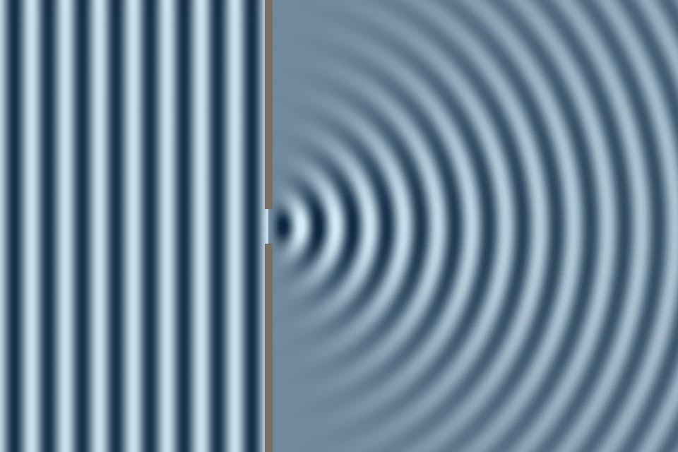

Aalto kohtaa esteen tai raon
Miksi aallot ylettyvät aallonmurtajan kapeasta aukosta myös sataman nurkkiin? Miksi ne eivät kulje vain suoraan aukon kohdalle?
Pohjatiedot
- Aallonpituus $\lambda$ on kahden peräkkäisen aallonharjan etäisyysluku Aaltojen synty ja eteneminen
- Aallon nopeus, taajuus ja aallonpituus liittyvät toisiinsa: $v = f\lambda$luku Aaltojen synty ja eteneminen
Ydinpolku: tee vaiheet järjestyksessä. Ydinpolulla ei vain lasketa. Siinä myös tutkitaan, selitetään ja piirretään kuvaajia. Valinnainen-tehtävät ovat lisäharjoittelua. Valinnaisia tehtäviä on 3.
Luvun tärkeät käsitteet Vapaaehtoinen
Tutustu luvun tärkeisiin käsitteisiin. Voit kirjoittaa niiden merkitykset sinulle vahvimmalla kielellä tai useammalla kielellä.
- Heijastuminen
- Aalto osuu esteeseen ja palaa takaisin, esimerkiksi kaiku.
- Heijastuslaki
- Aalto heijastuu pinnasta samassa kulmassa, jossa se tulee pinnalle.
- Huygensin periaate
- Aaltorintaman jokainen piste toimii uuden pienen aallon lähteenä. Näistä aalloista syntyy uusi aaltorintama.
- Diffraktio
- Aalto taipuu esteen reunan taakse tai leviää kapean aukon jälkeen.
Pohdinta
Myrskyisenä päivänä aallot tulevat avomereltä kohti satamaa suorina riveinä. Aallonmurtajassa on vain kapea aukko laivoja varten. Sataman allas on aukon takana leveämpi kuin aukko. Silti aallot keinuttavat myös veneitä, jotka ovat laiturissa altaan nurkassa kaukana aukon sivulla. Aallonmurtajan seinästä aallot taas kimpoavat takaisin merelle.
Miten aalto käyttäytyy, kun se kohtaa seinän tai kapean aukon?
Kertaa: aallonpituus ja taajuus
Ennusta
Tee ennusteet ennen tutkimista 3 kysymystä
Ennuste 1: kulma seinästä
Ennuste 2: köyden kiinteä pää
Ennuste 3: kapeampi rako
Tutki
Simulaatio
Käyttöohje
Valitse Tilanne. Köyden tilanteissa Käynnistä lähettää pulssin, joka kulkee köyden päähän ja takaisin. Lukemissa on heijastuneen pulssin poikkeama $y_\text{h}$, kun pulssi on irronnut päästä. Altaan tilanteissa aallot liikkuvat koko ajan, ja Pysäytä pysäyttää kuvan. Seinätilanteessa säädä tulokulmaa $\alpha$. Sinisillä viivoilla on piirretty tulevan aallon harjat ja vihreillä heijastuneen aallon harjat. Rako- ja estetilanteissa säädä aallonpituutta $\lambda$ ja raon tai esteen leveyttä $b$. Vaaleat kohdat ovat aallonharjoja ja tummat aallonpohjia. Näytä alkeisaallot piirtää seinän tai raon pisteistä lähtevät Huygensin alkeisaallot. Liukusäädin vaikuttaa vain niissä tilanteissa, joissa sen suure on mukana. Nopeus muuttaa vain animaation tahtia.
Mallin oletukset
Köysi on $5{,}0\,\text{m}$ pitkä. Pulssi etenee nopeudella $2{,}0\,\text{m/s}$ vaimenematta. Pulssin poikkeama $3{,}0\,\text{cm}$ on piirretty suurennettuna. Kiinteä pää ei liiku lainkaan, ja vapaan pään rengas liukuu kitkatta. Allas on $30\,\text{cm} \cdot 20\,\text{cm}$ ja vesi on joka kohdassa yhtä syvää, joten aallon nopeus ei muutu. Seinä heijastaa aallon kokonaan. Raon ja esteen tilanteissa esteestä takaisin heijastuvaa aaltoa ei piirretä. Animaation tahti on hidastettu. Luvut ovat mallin laskemia arvoja.
Laskennan selitys
Köysi: pään vaikutus lasketaan kuvitellulla peilipulssilla, joka tulee pään takaa vastaan. Kiinteässä päässä peilipulssi on vastakkaismerkkinen. Silloin pään poikkeama on aina nolla. Vapaassa päässä peilipulssi on samanmerkkinen. Silloin pää heilahtaa hetkeksi kaksinkertaiseen poikkeamaan.\n\nSeinä: tuleva rintama saavuttaa kaksi seinän pistettä, joiden etäisyys on $d$, eri hetkinä. Kun rintama saavuttaa jälkimmäisen pisteen, edellisestä pisteestä lähteneen alkeisaallon säde on $r = d \sin\alpha$. Heijastunut rintama sivuaa alkeisaaltoa, joten $\sin\beta = \tfrac{r}{d}$.\n\nRako ja este: raon kohdalle sijoitetaan alkeisaaltojen lähteitä enintään $\tfrac{\lambda}{8}$:n välein. Veden pinnan korkeus joka kohdassa on näiden alkeisaaltojen summa. Leviämiskulma $\theta$ on kulma suoraan eteenpäin etenevästä suunnasta siihen suuntaan, jossa aallon amplitudi kaukana raosta on pudonnut puoleen. Jos amplitudi ei putoa puoleen missään suunnassa, $\theta = 90^\circ$. Este lasketaan tasoaallon ja esteen levyisen raon aallon erotuksena. Piste $P$ on $8{,}0\,\text{cm}$ esteen takana.
Valitse tilanne: köyden pulssi, aallot ja seinä, aallot ja rako tai aallot ja este. Altaan tilanteissa katsot vettä ylhäältä.
Koe 1: tulokulma ja heijastuskulma
Testaa ennuste 1. Tilanne on aallot ja seinä. Muuta tulokulmaa $\alpha$. Kirjaa heijastuskulma ja heijastuneen säteen ja pinnan välinen kulma ainakin kahdella tulokulmalla. Kokeile myös tulokulmaa, jolla säde muodostaa pinnan kanssa $30^\circ$:n kulman. Laita Näytä alkeisaallot päälle ja katso, mihin alkeisaaltojen sivuaja osuu.
Alkutila: tilanne: aallot ja seinä, aallonpituus $\lambda$ = $2\,\text{cm}$, tulokulma $\alpha$ = $30^\circ$. Vakiona: tilanne, aallonpituus $\lambda$. Muutetaan: tulokulma $\alpha$.
| tulokulma $\alpha$ | β $(^\circ)$ | kulma pinnasta $(^\circ)$ |
|---|
Lisää tutkittavaa 4 tehtävää
Koe 2: kiinteä ja vapaa pää
Testaa ennuste 2. Paina Käynnistä ja odota, että pulssi palaa. Kirjaa heijastuneen pulssin poikkeama, kun pää on kiinteä. Vaihda sitten tilanteeksi vapaa pää. Paina taas Käynnistä ja kirjaa poikkeama uudelleen. Katso myös, mitä köyden pää tekee, kun pulssi kääntyy.
Alkutila: tilanne: köysi, kiinteä pää. Vakiona: ei mitään. Muutetaan: tilanne.
| tilanne | $y_h$ $(\text{cm})$ |
|---|
Koe 3: raon leveys
Testaa ennuste 3. Tilanne on aallot ja rako. Aallonpituus pysyy arvossa $2{,}0\,\text{cm}$. Kavenna rakoa ja kirjaa leviämiskulma ainakin kahdella leveydellä, esimerkiksi $8{,}0\,\text{cm}$, $4{,}0\,\text{cm}$, $2{,}0\,\text{cm}$ ja $1{,}0\,\text{cm}$. Katkoviivat näyttävät kulman $\theta$, jonka sisällä aalto on voimakas.
Alkutila: tilanne: aallot ja rako, aallonpituus $\lambda$ = $2\,\text{cm}$, raon leveys $b$ = $8\,\text{cm}$. Vakiona: tilanne, aallonpituus $\lambda$. Muutetaan: raon leveys $b$.
| raon leveys $b$ | $b/\lambda$ | $\theta$ $(^\circ)$ |
|---|
Valinnainen Koe 4: aallonpituus samassa raossa
Raon leveys pysyy arvossa $3{,}0\,\text{cm}$. Muuta aallonpituutta ja kirjaa leviämiskulma ainakin kahdella aallonpituudella. Vertaa kokeen 3 tuloksiin: millä raon leveydellä ja aallonpituudella saat saman kulman?
Alkutila: tilanne: aallot ja rako, aallonpituus $\lambda$ = $1\,\text{cm}$, raon leveys $b$ = $3\,\text{cm}$. Vakiona: tilanne, raon leveys $b$. Muutetaan: aallonpituus $\lambda$.
| aallonpituus $\lambda$ | $b/\lambda$ | $\theta$ $(^\circ)$ |
|---|
Johtopäätös: heijastuminen ja taipuminen
Kirjoita taulukoidesi perusteella: miten heijastuskulma riippuu tulokulmasta, kun molemmat mitataan normaalista? Miten pulssi heijastuu kiinteästä ja vapaasta päästä? Miten aallon leviäminen raon takana riippuu raon leveydestä?
Mallivastaus
Heijastuskulma oli joka kerta yhtä suuri kuin tulokulma. Esimerkiksi kun $\alpha = 30^\circ$, niin $\beta = 30^\circ$, ja kun $\alpha = 60^\circ$, niin $\beta = 60^\circ$. Pinnasta mitattu kulma oli $90^\circ - \beta$. Siksi pinnasta mitattua kulmaa ei voi käyttää tulokulmana. Kiinteästä päästä pulssi palasi kääntyneenä, $y_\text{h} = -3{,}0\,\text{cm}$. Vapaasta päästä pulssi palasi kääntymättä, $+3{,}0\,\text{cm}$. Aallonpituus oli $2{,}0\,\text{cm}$. Leviämiskulma kasvoi $8{,}7^\circ$:sta $90^\circ$:een, kun rako kapeni $8{,}0\,\text{cm}$:stä $1{,}0\,\text{cm}$:iin. Kun rako on selvästi aallonpituutta kapeampi ($b < \lambda$), aalto leviää koko alueelle raon taakse. Jo kun $b \approx \lambda$, leviäminen on suuri. Arvot ovat mallin laskemia.
Arvioi oma vastauksesi
Merkitse kohdat, jotka sinun vastauksessasi jo on.
Kertaa asia teoriasta ja harjoittele tehtävillä.
Teoria
Ydinajatus
Aaltorintama ja säde
Aaltoa on helpointa kuvata ylhäältä katsottuna. Aaltorintama on viiva, joka yhdistää aallon samassa vaiheessa olevat kohdat. Samassa vaiheessa olevat kohdat liikkuvat samaan aikaan samalla tavalla. Esimerkiksi yksi aallonharja on aaltorintama. Kahden peräkkäisen harjan välinen etäisyys on aallonpituus $\lambda$ (luku Aaltojen synty ja eteneminen). Säde on nuoli, joka näyttää aallon etenemissuunnan. Säde on aina kohtisuorassa aaltorintamaa vastaan. Suoran rintaman aalto on tasoaalto. Pistemäisestä lähteestä, kuten veteen pudonneesta kivestä, lähtee ympyräaalto. Sen säteet osoittavat lähteestä poispäin joka suuntaan.
Heijastuminen köyden päästä
Kun aalto saapuu väliaineen rajalle, se heijastuu. Silloin osa aallosta tai koko aalto palaa takaisin. Köydessä tämän näkee yhdestä pulssista. Oletetaan, että köyden pää on kiinni seinässä. Silloin pää ei pääse liikkumaan. Ylöspäin suuntautuva pulssi vetää kiinnitystä ylöspäin. Seinä vetää köyttä yhtä suurella voimalla alaspäin. Siksi kiinteästä päästä heijastunut pulssi on kääntynyt: se palaa alaspäin suuntautuvana. Oletetaan sitten, että köyden pää on rengas, joka liukuu kitkatta tankoa pitkin. Silloin pää heilahtaa pulssin mukana ylös, eikä mikään vedä sitä alas. Vapaasta päästä heijastunut pulssi ei käänny, vaan palaa samanmerkkisenä.
Huygensin periaate
Hollantilainen Christiaan Huygens esitti 1600-luvulla periaatteen. Sen avulla aallon etenemistä voi päätellä piirtämällä. Huygensin periaatteen mukaan aaltorintaman jokainen piste on uuden pienen ympyräaallon lähde. Tätä pientä aaltoa sanotaan alkeisaalloksi. Alkeisaallot etenevät samalla nopeudella kuin alkuperäinen aalto. Hetken kuluttua uusi aaltorintama on viiva, joka sivuaa eli juuri koskettaa kaikkia alkeisaaltoja. Tätä viivaa sanotaan alkeisaaltojen sivuajaksi. Avoimessa vedessä alkeisaaltojen sivuaja on taas suora, joten tasoaalto jatkaa suoraan. Joskus osa rintamasta pysähtyy esteeseen tai kimpoaa seinästä. Silloin jäljelle jääneet alkeisaallot kertovat, mihin aalto etenee.
Diffraktio
Aalto voi kulkea raosta tai esteen ohi. Silloin se taipuu myös esteen taakse, alueelle, jonne suoraan etenevä säde ei osu. Tätä kutsutaan diffraktioksi eli taipumiseksi. Huygensin periaate selittää sen. Raon kohdalla olevat rintaman pisteet ovat alkeisaaltojen lähteitä. Reunimmaisten pisteiden alkeisaallot leviävät sivuille. Raon leveyttä merkitään $b$. Jos rako on monta aallonpituutta leveä, rintama jatkaa raon kohdalla lähes suorana. Se kaartuu vain reunoilta. Kun rako on selvästi aallonpituutta kapeampi, eli $b < \lambda$, alkeisaaltoja on raon kohdalla kuin yhdestä pisteestä. Silloin aalto leviää puoliympyränä koko alueelle raon taakse. Aalto leviää paljon jo silloin, kun rako on suunnilleen aallonpituuden levyinen, $b \approx \lambda$.

Sama pätee esteeseen. Ajatellaan estettä, joka on aallonpituutta kapeampi, esimerkiksi laituripaalua. Se ei juuri jätä taakseen varjoa, koska aalto taipuu sen ympäri. Aallonpituutta paljon leveämmän esteen taakse jää suojaisa alue. Diffraktio on siis voimakasta, kun raon tai esteen leveys on aallonpituuden suuruinen tai pienempi. Ääni taipuu ovesta käytävään. Puheäänen aallonpituus on noin metrin luokkaa. Se on suunnilleen yhtä suuri kuin oviaukon leveys.
Heijastuslaki
Aalto osuu tasaiseen pintaan, kuten seinään tai rantamuuriin. Osumakohtaan piirretään pinnan normaali. Normaali on suora, joka on kohtisuorassa pintaa vastaan. Kulmat mitataan aina normaalista. Tulokulma on tulevan säteen ja normaalin välinen kulma. Heijastuskulma on heijastuneen säteen ja normaalin välinen kulma. Heijastuslaki on
$$\beta = \alpha$$
missä $\alpha$ on tulokulma ja $\beta$ heijastuskulma. Lisäksi tuleva säde, heijastunut säde ja normaali ovat samassa tasossa. Heijastunut säde on normaalin toisella puolella kuin tuleva säde. Säteen ja pinnan välinen kulma on $90^\circ - \alpha$. Sitä ei käytetä tulokulmana.
Huygensin periaate selittää, miksi kulmat ovat yhtä suuret. Tasoaallon rintama $AB$ osuu seinään vinosti, joten sen piste $A$ koskettaa seinää ensin. Siitä lähtee alkeisaalto, kun rintaman toinen pää $B$ on vielä matkan päässä. Kun $B$ saapuu seinälle kohtaan $C$, $A$:sta lähtenyt alkeisaalto on edennyt saman matkan, koska nopeus on sama. Heijastunut rintama $CD$ sivuaa alkeisaaltoja. Kolmiot $ABC$ ja $CDA$ ovat yhtenevät eli täsmälleen samanmuotoiset ja samankokoiset. Niillä on yhteinen sivu $AC$ ja yhtä pitkät sivut $BC$ ja $AD$. Lisäksi niillä on suora kulma kohdissa $B$ ja $D$. Siksi rintamat muodostavat seinän kanssa yhtä suuret kulmat. Rintaman ja seinän välinen kulma on yhtä suuri kuin säteen ja normaalin välinen kulma, joten $\beta = \alpha$.
Yleinen virhekäsitys
Yleisin virhe on mitata tulokulma pinnasta eikä normaalista. Säde voi muodostaa seinän kanssa $30^\circ$:n kulman. Silloin tulokulma ei ole $30^\circ$, vaan $90^\circ - 30^\circ = 60^\circ$. Piirrä siksi aina ensin normaali osumakohtaan. Toinen virhe on ajatella, että aalto taipuu vain hyvin kapeassa raossa. Sen mukaan leveä rako päästää aallon läpi täysin suorana. Diffraktiota on jokaisessa raossa ja jokaisen esteen reunalla. Se näkyy selvästi vasta, kun raon leveys on suunnilleen aallonpituuden suuruinen. Kolmas virhe on luulla, että kiinteä pää vaimentaa pulssin. Jäykästä kiinnityksestä pulssi heijastuu lähes kokonaan, mutta kääntyneenä.
Tiivistelmä
- Aaltorintama yhdistää samassa vaiheessa olevat kohdat. Säde näyttää etenemissuunnan kohtisuoraan rintamaa vastaan.
- Heijastuslaki: $\beta = \alpha$, kun tulokulma ja heijastuskulma mitataan pinnan normaalista.
- Köyden kiinteästä päästä pulssi heijastuu kääntyneenä, vapaasta päästä kääntymättä.
- Huygensin periaate: aaltorintaman jokainen piste on alkeisaallon lähde, ja uusi rintama sivuaa alkeisaaltoja. Periaate selittää heijastumisen ja diffraktion.
- Diffraktio eli aallon taipuminen raon tai esteen taakse on voimakasta, kun raon tai esteen leveys on suunnilleen aallonpituuden suuruinen tai pienempi.
Valinnainen Palaa ennusteisiisi
Vertaa ennusteitasi simulaation arvoihin ja Huygensin periaatteeseen. Palaa sitten alun kysymykseen: miksi aallot ylettyvät aallonmurtajan aukosta sataman nurkkiin? Mitä aallonpituudesta ja aukon leveydestä pitäisi tietää, jotta voisi ennustaa, kuinka paljon aallot leviävät?
Haluaisitko muuttaa ennustettasi?
Esimerkit
Kun olet lukenut teorian, tee ohjatut esimerkit. Ensin katsot mallilaskun vaihe vaiheelta. Sitten teet valinnat itse. Vihjeet auttavat, jos jäät jumiin.
Esimerkki 1: Aallot aallonmurtajassa
Meren aallot saapuvat suoraa aallonmurtajaa kohti. Aaltorintamat muodostavat murtajan seinän kanssa $50^\circ$:n kulman. Mikä on aaltojen tulokulma ja heijastuskulma? Mikä kulma jää heijastuneiden aaltojen etenemissuunnan ja murtajan seinän välille?
Vaihe 1/7
Tunnetut ja kysytty. Aaltorintaman ja seinän välinen kulma on $\varphi = 50^\circ$. Kysytään tulokulmaa $\alpha$, heijastuskulmaa $\beta$ ja heijastuneen säteen ja seinän pinnan välistä kulmaa $\gamma$.
Vaihe 2/7
Periaate. Säde on kohtisuorassa aaltorintamaa vastaan. Normaali on kohtisuorassa seinää vastaan. Ajatellaan, että kumpaakin suoraa käännetään $90^\circ$. Silloin niiden välinen kulma ei muutu. Siksi säteen ja normaalin välinen kulma on sama kuin rintaman ja seinän välinen kulma. Heijastuslain mukaan heijastuskulma on yhtä suuri kuin tulokulma, kun molemmat mitataan normaalista.
Vaihe 3/7
Kaava ratkaistuna. $$\begin{aligned} \alpha &= \varphi \\ \beta &= \alpha \\ \gamma &= 90^\circ - \beta \end{aligned}$$
Vaihe 4/7
Yksikkömuunnokset. Ei tarvita: kaikki kulmat ovat asteina.
Vaihe 5/7
Sijoitus. $$\begin{aligned} \alpha &= 50^\circ \\ \beta &= 50^\circ \\ \gamma &= 90^\circ - 50^\circ = 40^\circ \end{aligned}$$
Vaihe 6/7
Tulos. Tulokulma ja heijastuskulma ovat $50^\circ$. Heijastuneet aallot etenevät $40^\circ$:n kulmassa murtajan seinään nähden. Kulmat ilmoitetaan kokonaisina asteina kuten lähtötieto $50^\circ$.
Vaihe 7/7
Järkevyys. Oletetaan, että rintamat ovat seinän suuntaiset, eli $\varphi = 0^\circ$. Silloin aallot tulisivat kohtisuoraan ja palaisivat samaa reittiä, $\alpha = \beta = 0^\circ$. Kun $\varphi$ kasvaa, aallot tulevat yhä loivemmin. Lisäksi $\alpha + \gamma = 90^\circ$, kuten normaalin ja pinnan välisen suoran kulman pitääkin.
Esimerkki 2: Etsi virhe
Esimerkki 3: Sovella uuteen tilanteeseen
Sataman nurkassa kaksi suoraa betonimuuria kohtaa toisensa suorassa kulmassa. Aalto osuu ensin muuriin 1 tulokulmassa $35^\circ$ ja heijastuu. Sitten se osuu muuriin 2.
Mikä on tulokulma muurilla 2? Vastaa asteina.
Vihje 1: ohjaava kysymys
Piirrä kumpaankin osumakohtaan oma normaali. Kumman muurin suuntainen on muurin 1 normaali?
Vihje 2: mikä yhteys
Muurin 1 normaali on muurin 2 suuntainen, koska muurit ovat kohtisuorassa. Heijastunut säde muodostaa muurin 1 normaalin kanssa kulman $\beta_1 = 35^\circ$. Siksi se muodostaa myös muurin 2 pinnan kanssa $35^\circ$:n kulman.
Vihje 3: välivaihe
Muurin 2 tulokulma mitataan muurin 2 normaalista: $\alpha_2 = 90^\circ - 35^\circ$.
Näytä ratkaisu
Annettu
muurit kohtisuorassa toisiaan vastaan, tulokulma muurilla 1 $\alpha_1 = 35^\circ$
Kysytty
tulokulma muurilla 2, $\alpha_2$ asteina
Periaate
Heijastuslain mukaan $\beta_1 = \alpha_1$, kun kulmat mitataan normaalista. Muurit ovat kohtisuorassa, joten muurin 1 normaali on muurin 2 suuntainen. Siksi heijastuneen säteen ja muurin 2 pinnan välinen kulma on $\beta_1$. Muurin 2 tulokulma on tämän kulman komplementtikulma eli kulma, joka puuttuu suoraan kulmaan.
Kaava
$\beta_1 = \alpha_1$ ja $\alpha_2 = 90^\circ - \beta_1$, joten $\alpha_2 = 90^\circ - \alpha_1$
Muunnokset
Ei tarvita: kulmat ovat asteina.
Sijoitus
Vastaus
$55^\circ$
Kokonaisina asteina kuten lähtötieto $35^\circ$.
Järkevyys
Kulmat $\alpha_1$ ja $\alpha_2$ ovat yhteensä $90^\circ$. Muurilta 2 aalto heijastuu kulmassa $55^\circ$. Kukin heijastus kääntää sädettä kulman $180^\circ - 2\alpha$. Koko käännös on siis
Aalto palaa nurkasta tulosuuntaansa vastaan, kuten nurkkaheijastimessa kuuluu.
Kertaa luvun käsitteet
Jos valitset Kertaa myöhemmin, kortti menee kertauspakkaasi.
- Heijastuminen
- Aallon suunnan muuttuminen rajapinnassa niin, että aalto palaa alkuperäiseen väliaineeseen.
- Diffraktio
- Aallon taipuminen ja leviäminen esteen reunan tai kapean aukon kohdalla.
Tehtävät
Taso 1 · perusharjoitus 8 tehtävää
Yksi kaava tai yksi päättelyaskel. Tee ensin ydintehtävät. Loput ovat lisäharjoitusta.
- Tehtävä 11-1
Aaltoaltaassa tasoaalto osuu altaan seinään tulokulmassa $35^\circ$. Mikä on heijastuskulma?
Vastaus
$35^\circ$
Näytä ratkaisu
Annettu
suora seinä, tulokulma $\alpha = 35^\circ$
Kysytty
heijastuskulma $\beta$ asteina
Periaate
Seinä on suora ja heijastaa aallon, joten heijastuslaki pätee. Heijastuskulma on yhtä suuri kuin tulokulma, kun molemmat mitataan seinän normaalista. Tulokulma on annettu valmiiksi normaalista mitattuna.
Kaava
$\beta = \alpha$
Muunnokset
Ei tarvita: kulma on asteina.
Sijoitus
$\beta = 35^\circ$
Vastaus
$35^\circ$
Kokonaisina asteina kuten tulokulma $35^\circ$.
Järkevyys
Heijastunut säde on normaalin toisella puolella samassa kulmassa. Kulma on $0^\circ$:n ja $90^\circ$:n välillä, kuten normaalista mitatun kulman pitää.
- Tehtävä 11-2Ydintehtävä
Merestä tuleva aalto osuu laiturin tasaiseen seinään. Tulevan säteen ja seinän pinnan välinen kulma on $20^\circ$. Mikä on aallon tulokulma?
Vastaus
$70^\circ$
Näytä ratkaisu
Annettu
tulevan säteen ja seinän pinnan välinen kulma $\gamma = 20^\circ$
Kysytty
tulokulma $\alpha$ asteina
Periaate
Tulokulma mitataan pinnan normaalista, ei pinnasta. Normaali on kohtisuorassa pintaa vastaan. Siksi säteen ja pinnan välinen kulma ja säteen ja normaalin välinen kulma ovat yhteensä $90^\circ$.
Kaava
$\alpha + \gamma = 90^\circ$, josta $\alpha = 90^\circ - \gamma$
Muunnokset
Ei tarvita: kulmat ovat asteina.
Sijoitus
$\alpha$$= 90^\circ - 20^\circ$$= 70^\circ$Vastaus
$70^\circ$
Kokonaisina asteina kuten annettu kulma $20^\circ$.
Järkevyys
Säde tulee loivasti, lähes seinän suuntaisesti. Siksi sen kulma normaalista on suuri. Kun pinnasta mitattu kulma on pieni, tulokulma lähestyy $90^\circ$:ta, kuten pitää.
- Tehtävä 11-3
Aaltoaltaan aaltokone tekee aaltoja taajuudella $8{,}0\,\text{Hz}$. Aallot etenevät nopeudella $0{,}24\,\text{m/s}$. Mikä on aallonpituus? Anna vastaus senttimetreinä.
Vastaus
$3{,}0\,\text{cm}$
Näytä ratkaisu
Annettu
taajuus $f = 8{,}0\,\text{Hz}$, aallon nopeus $v = 0{,}24\,\text{m/s}$
Kysytty
aallonpituus $\lambda$ senttimetreinä
Periaate
Aalto etenee yhden jaksonajan aikana yhden aallonpituuden matkan. Siksi nopeus, taajuus ja aallonpituus liittyvät toisiinsa aaltoliikkeen perusyhtälöllä (luku Aaltojen synty ja eteneminen).
Kaava
$v = f\lambda$, josta $\lambda = \dfrac{v}{f}$
Muunnokset
Tulos saadaan metreinä. Lopuksi muutetaan senttimetreiksi: $1\,\text{m} = 100\,\text{cm}$.
Sijoitus
$\lambda$$= \dfrac{0{,}24\,\text{m/s}}{8{,}0\,\text{Hz}}$$= 0{,}030\,\text{m}$$= 0{,}030 \cdot 100\,\text{cm}$$= 3{,}0\,\text{cm}$Vastaus
$3{,}0\,\text{cm}$
Kaksi merkitsevää numeroa kuten nopeudessa ja taajuudessa.
Järkevyys
Aaltoaltaan aaltojen harjat ovat muutaman senttimetrin päässä toisistaan. Tarkistus: $8{,}0\,\text{Hz} \cdot 0{,}030\,\text{m} = 0{,}24\,\text{m/s}$, ja yksikkö $\tfrac{\text{m/s}}{\text{1/s}} = \text{m}$.
- Tehtävä 11-4
Köyden pää on sidottu renkaaseen. Rengas liukuu kitkatta pystysuoraa tankoa pitkin. Köyteen lähetetään ylöspäin suuntautuva pulssi, ja se heijastuu renkaan kohdalta.
Mihin suuntaan heijastuneen pulssin poikkeama osoittaa, ja miksi?
Vastaus
Ylöspäin: vapaa pää ei käännä pulssia.
Näytä ratkaisu
Kysytty
heijastuneen pulssin poikkeaman suunta ja sen syy
Periaate
Rengas, joka liukuu kitkatta tankoa pitkin, on köyden vapaa pää. Mikään ei estä sitä liikkumasta pystysuunnassa. Tanko ei voi vetää köyttä ylös eikä alas.
Mallivastaus
Heijastuneen pulssin poikkeama osoittaa ylöspäin, eli pulssi palaa kääntymättä. Kun ylöspäin suuntautuva pulssi saapuu renkaan kohdalle, rengas nousee pulssin mukana ylös. Se heilahtaa hetkeksi tavallista korkeammalle. Mikään ei vedä sitä alas. Siksi köysi palaa tasapainoasemaansa samalla tavalla kuin se nousi, ja pulssi lähtee takaisin samanmerkkisenä. Jos pää olisi kiinni seinässä, seinä vetäisi köyttä alaspäin ja pulssi kääntyisi.
- Tehtävä 11-5
Retkeilijä huutaa järven rannalla. Kaiku vastarannan kallioseinästä kuuluu $1{,}4\,\text{s}$ kuluttua. Äänen nopeus ilmassa on $343\,\text{m/s}$. Kuinka kaukana kallioseinä on?
Vastaus
$240\,\text{m}$
Näytä ratkaisu
Annettu
kaiun viive $t = 1{,}4\,\text{s}$, äänen nopeus $v = 343\,\text{m/s}$
Kysytty
etäisyys $d$ kallioseinään metreinä
Periaate
Ääni etenee tasaisella nopeudella seinälle, heijastuu siitä ja palaa takaisin. Kaiun viiveen aikana ääni kulkee siis matkan $2d$ (menomatka ja paluumatka).
Kaava
$2d = v t$, josta $d = \dfrac{v t}{2}$
Muunnokset
Ei tarvita: nopeus on yksikössä m/s ja aika sekunteina.
Sijoitus
$d$$= \dfrac{343\,\text{m/s} \cdot 1{,}4\,\text{s}}{2}$$= \dfrac{480{,}2\,\text{m}}{2}$$= 240{,}1\,\text{m}$Vastaus
$240\,\text{m}$
Eli $2{,}4 \cdot 10^2\,\text{m}$, kaksi merkitsevää numeroa kuten viiveessä $1{,}4\,\text{s}$.
Järkevyys
Ääni kulkee noin kolmanneksen kilometristä sekunnissa, joten $1{,}4\,\text{s}$:ssa noin $0{,}48\,\text{km}$; puolet siitä on noin $0{,}24\,\text{km}$. Järven yli vastarannalle se on uskottava matka.
- Tehtävä 11-6Ydintehtävä
Köyden toinen pää on sidottu tiukasti seinään. Köyden vapaasta päästä lähetetään ylöspäin suuntautuva pulssi. Pulssi etenee seinälle ja heijastuu siitä takaisin.
Mikä väite pulssin paluusta on oikein?
Vastaus
Pulssi palaa alaspäin, koska seinä vetää köyden päätä alas.
Näytä ratkaisu
Kysytty
miten ylöspäin suuntautuva pulssi palaa köyden kiinteästä päästä
Periaate
Seinään sidottu pää ei pääse liikkumaan. Kun pulssi saapuu päähän, köysi yrittää nousta ylös. Seinä vastaa vetämällä köyttä alas. Tämä seinän voima synnyttää heijastuneen pulssin.
Mallivastaus
Pulssi palaa alaspäin eli käännettynä. Seinä vetää köyden päätä alas. Siksi heijastunut pulssi lähtee takaisin vastakkaiseen suuntaan kuin tuleva. Pulssin nopeus ei muutu, koska se riippuu köydestä. Pulssi heijastuu lähes kokonaan, koska jäykkä kiinnitys ei vaimenna sitä. Väite, että pulssi palaa ylöspäin, kuvaisi vapaata päätä. Väite, että pulssi katoaa, ei pidä paikkaansa.
- Tehtävä 11-7Ydintehtävä
Aaltoaltaassa tasoaalto kulkee esteessä olevan raon läpi. Aallonpituus on $4{,}0\,\text{cm}$ ja raon leveys $3{,}0\,\text{cm}$. Taajuus kaksinkertaistetaan. Aallon nopeus altaassa pysyy samana.
Mikä väite aallon taipumisesta raon takana on oikein?
Vastaus
Taipuminen heikkenee, koska aallonpituus lyhenee raon leveyteen verrattuna.
Näytä ratkaisu
Kysytty
miten taajuuden kaksinkertaistaminen muuttaa aallon taipumista raon takana
Periaate
Aallon nopeus pysyy samana. Yhtälön $v = f\lambda$ mukaan aallonpituus pienenee, kun taajuus kasvaa. Diffraktio eli aallon taipuminen on sitä voimakkaampaa, mitä kapeampi rako on aallonpituuteen verrattuna.
Mallivastaus
Uusi aallonpituus on puolet entisestä eli $2{,}0\,\text{cm}$. Raon leveys aallonpituuteen verrattuna kasvaa suhteesta $\tfrac{3{,}0\,\text{cm}}{4{,}0\,\text{cm}} = 0{,}75$ suhteeseen $\tfrac{3{,}0\,\text{cm}}{2{,}0\,\text{cm}} = 1{,}5$. Rako on siis suhteessa leveämpi, ja taipuminen heikkenee. Taipuminen on kuitenkin yhä selvää, koska rako on vielä aallonpituuden kokoinen. Aallon energia ei vaikuta taipumisen voimakkuuteen. Myöskään raon leveys yksin ei ratkaise sitä. Ratkaisevaa on, kuinka leveä rako on aallonpituuteen verrattuna. Aalto kulkee raosta kummallakin taajuudella.
- Tehtävä 11-8
Kalastusveneen kaikuluotain lähettää ultraäänipulssin kohti järven pohjaa. Ultraääni on ääntä, jota ihminen ei kuule. Pohja on $36\,\text{m}$:n syvyydessä. Äänen nopeus vedessä on $1500\,\text{m/s}$.
Kuinka kauan pulssin lähettämisestä kuluu, kunnes kaiku palaa? Anna vastaus millisekunteina.
Vastaus
$48\,\text{ms}$
Näytä ratkaisu
Annettu
pohjan syvyys $d = 36\,\text{m}$, äänen nopeus vedessä $v = 1500\,\text{m/s}$
Kysytty
kaiun viive $t$ millisekunteina
Periaate
Pulssi etenee tasaisella nopeudella pohjaan, heijastuu ja palaa takaisin. Viiveen aikana se kulkee siis matkan $2d$ (menomatka ja paluumatka).
Kaava
$2d = v t$, josta $t = \dfrac{2d}{v}$
Muunnokset
Tulos saadaan sekunteina. Lopuksi muutetaan millisekunteiksi: $1\,\text{s} = 1000\,\text{ms}$.
Sijoitus
$t$$= \dfrac{2 \cdot 36\,\text{m}}{1500\,\text{m/s}}$$= \dfrac{72\,\text{m}}{1500\,\text{m/s}}$$= 0{,}048\,\text{s}$$= 0{,}048 \cdot 1000\,\text{ms}$$= 48\,\text{ms}$Vastaus
$48\,\text{ms}$
Kaksi merkitsevää numeroa kuten syvyydessä $36\,\text{m}$.
Järkevyys
Tarkistus:
$1500\,\text{m/s} \cdot 0{,}048\,\text{s}$$= 72\,\text{m}$$= 2 \cdot 36\,\text{m}$Ilmassa sama matka vaatisi $\tfrac{72\,\text{m}}{343\,\text{m/s}} \approx 0{,}21\,\text{s}$. Vedessä kaiku palaa siis $4{,}4$ kertaa nopeammin, koska ääni etenee vedessä $4{,}4$ kertaa nopeammin kuin ilmassa.
Taso 2 · soveltava harjoitus 8 tehtävää
Kaksi vaihetta, mittausaineiston käsittely, yksikkömuunnos tai kaavan ratkaiseminen. Tee ensin ydintehtävät. Loput ovat lisäharjoitusta.
- Tehtävä 11-9
Tasoaalto osuu tasaiseen seinään tulokulmassa $30^\circ$. Aaltorintama koskettaa seinää ensin kohdassa $A$ ja vähän myöhemmin toisessa kohdassa. Tämä toinen kohta $B$ on $0{,}60\,\text{m}$:n päässä kohdasta $A$. Aallon nopeus on $0{,}40\,\text{m/s}$.
Kuinka kauan kestää, ennen kuin sama rintama saavuttaa kohdan $B$?
Vastaus
$0{,}75\,\text{s}$
Näytä ratkaisu
Annettu
tulokulma $\alpha = 30^\circ$, kohtien $A$ ja $B$ etäisyys seinällä $d = 0{,}60\,\text{m}$, aallon nopeus $v = 0{,}40\,\text{m/s}$
Kysytty
aika $\Delta t$, jonka rintama tarvitsee $A$:sta $B$:hen
Periaate
Kun rintama koskettaa kohtaa $A$, rintaman piste, joka osuu $B$:hen, on vielä matkan $s$ päässä seinästä säteen suunnassa. Rintama on kohtisuorassa sädettä vastaan. Siksi matka $s$ on suorakulmaisen kolmion kateetti. Kolmion hypotenuusa on $d$ ja kateetin vastainen kulma on $\alpha$, kuten Huygensin rakennelmassa.
Kaava
$s = d \sin\alpha$ ja $s = v\,\Delta t$, joten $\Delta t = \dfrac{d \sin\alpha}{v}$
Muunnokset
Ei tarvita: matka on metreinä ja nopeus yksikössä m/s.
Sijoitus
$\Delta t$$= \dfrac{0{,}60\,\text{m} \cdot \sin 30^\circ}{0{,}40\,\text{m/s}}$$= \dfrac{0{,}30\,\text{m}}{0{,}40\,\text{m/s}}$$= 0{,}75\,\text{s}$Vastaus
$0{,}75\,\text{s}$
Kaksi merkitsevää numeroa kuten etäisyydessä $0{,}60\,\text{m}$ ja nopeudessa $0{,}40\,\text{m/s}$.
Järkevyys
Jos aalto tulisi kohtisuoraan ($\alpha = 0^\circ$), rintama koskettaisi koko seinää yhtä aikaa, $\Delta t = 0$. Jos aalto kulkisi seinän suuntaisesti,
$\Delta t$$= \tfrac{0{,}60\,\text{m}}{0{,}40\,\text{m/s}}$$= 1{,}5\,\text{s}$Tulos on näiden välissä.
- Tehtävä 11-10
Pihalle on pingotettu $8{,}0\,\text{m}$ pitkä köysi, jonka toinen pää on kiinni puussa. Köyden toisesta päästä lähetetään pulssi. Heijastunut pulssi palaa lähtökohtaan $3{,}2\,\text{s}$ kuluttua. Mikä on pulssin nopeus köydessä?
Vastaus
$5{,}0\,\text{m/s}$
Näytä ratkaisu
Annettu
köyden pituus $L = 8{,}0\,\text{m}$, aika lähtökohtaan palaamiseen $t = 3{,}2\,\text{s}$
Kysytty
pulssin nopeus $v$
Periaate
Pulssi etenee köydessä tasaisella nopeudella puuhun, heijastuu kiinteästä päästä ja palaa samaa köyttä pitkin. Heijastus kääntää pulssin, mutta se ei muuta nopeutta. Siksi pulssi kulkee ajassa $t$ matkan $2L$.
Kaava
$2L = v t$, josta $v = \dfrac{2L}{t}$
Muunnokset
Ei tarvita: pituus on metreinä ja aika sekunteina.
Sijoitus
$v$$= \dfrac{2 \cdot 8{,}0\,\text{m}}{3{,}2\,\text{s}}$$= \dfrac{16\,\text{m}}{3{,}2\,\text{s}}$$= 5{,}0\,\text{m/s}$Vastaus
$5{,}0\,\text{m/s}$
Kaksi merkitsevää numeroa kuten pituudessa ja ajassa.
Järkevyys
Jos matkaksi otettaisiin vain $8{,}0\,\text{m}$, nopeus olisi puolet, $2{,}5\,\text{m/s}$. Pulssi kulkee $8\,\text{m}$ noin puolessatoista sekunnissa kumpaankin suuntaan. Se sopii pingotettuun köyteen.
- Tehtävä 11-11
Seisot kapeassa kanjonissa kahden pystysuoran kallioseinän välissä. Taputat käsiäsi kerran. Ensimmäinen kaiku kuuluu $0{,}40\,\text{s}$ ja toinen $0{,}70\,\text{s}$ taputuksen jälkeen. Äänen nopeus on $343\,\text{m/s}$. Kuinka kaukana seinät ovat toisistaan?
Vastaus
$190\,\text{m}$
Näytä ratkaisu
Annettu
ensimmäisen kaiun viive $t_1 = 0{,}40\,\text{s}$, toisen $t_2 = 0{,}70\,\text{s}$, äänen nopeus $v = 343\,\text{m/s}$
Kysytty
seinien välinen etäisyys $D$
Periaate
Kumpikin kaiku on ääni, joka on kulkenut omalle seinälleen ja heijastunut takaisin. Lähempi seinä antaa ensimmäisen kaiun. Etäisyys kumpaankin seinään on puolet äänen kulkemasta matkasta. Seinät ovat eri puolilla kuulijaa, joten etäisyydet lasketaan yhteen.
Kaava
$d_1 = \dfrac{v t_1}{2}$,
$d_2$$= \dfrac{v t_2}{2}$$D$$= d_1 + d_2$$= \dfrac{v (t_1 + t_2)}{2}$Muunnokset
Ei tarvita: nopeus on yksikössä m/s ja ajat sekunteina.
Sijoitus
$D$$= \dfrac{343\,\text{m/s} \cdot (0{,}40\,\text{s} + 0{,}70\,\text{s})}{2}$$= \dfrac{343\,\text{m/s} \cdot 1{,}10\,\text{s}}{2}$$= 188{,}65\,\text{m}$Vastaus
$190\,\text{m}$
Eli $1{,}9 \cdot 10^2\,\text{m}$, kaksi merkitsevää numeroa kuten viiveissä $0{,}40\,\text{s}$ ja $0{,}70\,\text{s}$.
Järkevyys
Seinät ovat $68{,}6\,\text{m}$:n ja $120\,\text{m}$:n päässä. Kauempi antaa myöhemmän kaiun, kuten pitää. Ilman puolitusta saisi noin $380\,\text{m}$. Se olisi äänen koko edestakainen matka eikä seinien väli.
- Tehtävä 11-12
Luokan oviaukko on $0{,}90\,\text{m}$ leveä, ja äänen nopeus on $343\,\text{m/s}$. Millä äänen taajuudella aallonpituus on yhtä suuri kuin oviaukon leveys?
Vastaus
$380\,\text{Hz}$
Näytä ratkaisu
Annettu
oviaukon leveys $b = 0{,}90\,\text{m}$, äänen nopeus $v = 343\,\text{m/s}$
Kysytty
taajuus $f$, jolla aallonpituus on $\lambda = b$
Periaate
Äänen nopeus, taajuus ja aallonpituus liittyvät toisiinsa yhtälöllä $v = f\lambda$ (luku Aaltojen synty ja eteneminen). Asetetaan aallonpituus yhtä suureksi kuin aukon leveys ja ratkaistaan taajuus.
Kaava
$v = f\lambda$ ja $\lambda = b$, joten $f = \dfrac{v}{b}$
Muunnokset
Ei tarvita: nopeus on yksikössä m/s ja leveys metreinä, joten tulos on hertseinä.
Sijoitus
$f$$= \dfrac{343\,\text{m/s}}{0{,}90\,\text{m}}$$= 381{,}1\,\text{Hz}$Vastaus
$380\,\text{Hz}$
Eli $3{,}8 \cdot 10^2\,\text{Hz}$, kaksi merkitsevää numeroa kuten leveydessä $0{,}90\,\text{m}$.
Järkevyys
Taajuus on puheäänen alueella. Siksi puheen aallonpituus on oviaukon suuruinen, ja puhe taipuu ovesta käytävään. Tätä matalammilla taajuuksilla aallonpituus on aukkoa pidempi ja taipuminen vielä voimakkaampaa.
- Tehtävä 11-13
Oppilas seisoo koulun pitkän seinän edessä. Puhelimen sovellus soittaa lyhyen äänimerkin. Se mittaa ajan $t$ soittokäskystä siihen hetkeen, jolloin se havaitsee seinältä palaavan kaiun. Oppilas toistaa mittauksen eri etäisyyksillä $d$ seinästä.
Puhelimen äänentoistolla on tuntematon mutta aina yhtä suuri viive $t_0$ soittokäskyn ja äänen lähdön välillä. Siksi jokainen mitattu aika $t$ on liian pitkä saman verran (esimerkkiaineisto).
Määritä äänen nopeus käyttämällä taulukon ensimmäistä ja viimeistä mittausta. Anna vastaus yksikössä $\text{m/s}$.
Sovelluksen mittaama kaiun viive eri etäisyyksillä, esimerkkiaineisto $d\,(\text{m})$ $t\,(\text{s})$ 20,0 0,157 40,0 0,274 60,0 0,390 80,0 0,507 Vastaus
$343\,\text{m/s}$
Näytä ratkaisu
Annettu
ensimmäinen mittaus $d_1 = 20{,}0\,\text{m}$, $t_1 = 0{,}157\,\text{s}$; viimeinen mittaus $d_4 = 80{,}0\,\text{m}$, $t_4 = 0{,}507\,\text{s}$; puhelimen äänentoistolla on tuntematon mutta vakio viive $t_0$ soittokäskyn ja äänen lähdön välillä, joten jokainen mitattu aika on liian pitkä saman verran
Kysytty
äänen nopeus $v$
Periaate
Ääni kulkee seinälle ja takaisin, matkan $2d$. Sovelluksen mittaama aika on tämän matkan kulkuaika ja tuntematon vakioviive $t_0$. Kun lasketaan kahden mittauksen aikojen erotus, sama viive poistuu. Jäljelle jää pelkkä lisämatka $2(d_4 - d_1)$, jonka ääni kulkee ajassa $t_4 - t_1$.
Kaava
$t = \dfrac{2d}{v} + t_0$, joten $t_4 - t_1 = \dfrac{2(d_4 - d_1)}{v}$ ja $v = \dfrac{2(d_4 - d_1)}{t_4 - t_1}$
Muunnokset
Ei tarvita: matkat ovat metreinä ja ajat sekunteina.
Sijoitus
$$ \begin{aligned} v &= \frac{2 \cdot (80{,}0 - 20{,}0)\,\text{m}}{(0{,}507 - 0{,}157)\,\text{s}} \\ &= \frac{120\,\text{m}}{0{,}350\,\text{s}} \\ &= 342{,}86\,\text{m/s} \end{aligned} $$
Vastaus
$343\,\text{m/s}$
Kolme merkitsevää numeroa kuten ajoissa.
Järkevyys
Vakioviive on
$t_0$$= 0{,}157\,\text{s} - \tfrac{40{,}0\,\text{m}}{342{,}86\,\text{m/s}}$$\approx 0{,}040\,\text{s}$Se on uskottava viive puhelimen äänentoistolle. Jos nopeus laskettaisiin yhdestä mittauksesta kaavalla $\tfrac{2d}{t}$, viimeisestä saataisiin $\tfrac{160\,\text{m}}{0{,}507\,\text{s}} \approx 316\,\text{m/s}$. Se on liian pieni, koska aika sisältää vakioviiveen. Välimittaus sopii malliin:
$\tfrac{80{,}0\,\text{m}}{342{,}86\,\text{m/s}} + 0{,}040\,\text{s}$$= 0{,}273\,\text{s}$kun mitattu aika on $0{,}274\,\text{s}$.
- Tehtävä 11-14
Aaltoaltaassa tehdään tasoaaltoja taajuudella $12\,\text{Hz}$. Ne etenevät nopeudella $0{,}216\,\text{m/s}$. Aallot kulkevat esteessä olevan raon läpi. Raon leveyttä $b$ muutetaan. Kustakin kuvasta kirjataan, miten aalto leviää raon takana (esimerkkiaineisto).
a) Laske aallonpituus.
b) Kuinka monta kertaa leveämpi rako on kuin aallonpituus siinä mittauksessa, jossa aalto jatkui lähes suorana keilana?
c) Laske myös muiden rakojen suhde $\tfrac{b}{\lambda}$. Kirjoita sääntö: milloin aalto taipuu raon takana voimakkaasti ja milloin vähän?
Kirjoita vastauskenttään b-kohdan tulos.
Aalto raon takana eri rakoleveyksillä, esimerkkiaineisto $b\,(\text{cm})$ Aalto raon takana 0,9 joka suuntaan 1,8 joka suuntaan 3,6 leviää selvästi 7,2 vähän taipumista 14,4 lähes suora keila Vastaus
$8{,}0$
Näytä ratkaisu
Annettu
taajuus $f = 12\,\text{Hz}$, nopeus $v = 0{,}216\,\text{m/s}$; rakoleveydet taulukossa, lähes suora keila raolla $b = 14{,}4\,\text{cm}$
Kysytty
a) aallonpituus $\lambda$; b) suhde $\tfrac{b}{\lambda}$ siinä mittauksessa, jossa aalto jatkui lähes suorana; c) sääntö, milloin aalto taipuu
Periaate
Aallonpituus saadaan yhtälöstä $v = f\lambda$. Diffraktion eli taipumisen voimakkuus riippuu siitä, kuinka leveä rako on aallonpituuteen verrattuna. Siksi taulukon rakoleveydet kannattaa jakaa aallonpituudella.
Kaava
$\lambda = \dfrac{v}{f}$ ja suhde $\dfrac{b}{\lambda}$
Muunnokset
$\lambda$ saadaan metreinä. Muutetaan se senttimetreiksi ($1\,\text{m} = 100\,\text{cm}$), jotta sitä voi verrata rakoihin.
Sijoitus
$$ \begin{aligned} \lambda &= \frac{0{,}216\,\text{m/s}}{12\,\text{Hz}} \\ &= 0{,}018\,\text{m} = 1{,}8\,\text{cm} \\ \frac{b}{\lambda} &= \frac{14{,}4\,\text{cm}}{1{,}8\,\text{cm}} = 8{,}0 \end{aligned} $$
Vastaus
a) $\lambda = 1{,}8\,\text{cm}$. b) Rako on $8{,}0$ kertaa aallonpituuden levyinen, kaksi merkitsevää numeroa kuten taajuudessa ja nopeudessa. c) Aalto taipuu voimakkaasti, kun $\tfrac{b}{\lambda}$ on enintään noin $2$. Aalto taipuu vähän, kun suhde on selvästi suurempi.
Järkevyys
Muiden rakojen suhteet ovat $\tfrac{b}{\lambda} = 0{,}5$; $1{,}0$; $2{,}0$ ja $4{,}0$. Aalto leviää joka suuntaan, kun $\tfrac{b}{\lambda} \leq 1$. Se taipuu selvästi, kun suhde on $2{,}0$. Se taipuu vain vähän, kun suhde on $4{,}0$ tai suurempi. c) Suhteet $0{,}5$; $1{,}0$; $2{,}0$; $4{,}0$ ja $8{,}0$ vastaavat havaintoja ”joka suuntaan”, ”joka suuntaan”, ”leviää selvästi”, ”vähän taipumista” ja ”lähes suora keila”. Taulukon havainnot noudattavat siis sääntöä: mitä leveämpi rako on aallonpituuteen verrattuna, sitä vähemmän aalto taipuu.
- Tehtävä 11-15Ydintehtävä
Aaltoaltaassa tasoaalto heijastuu suorasta seinästä. Valokuvasta mitataan, että tuleva ja heijastunut säde muodostavat keskenään $64^\circ$:n kulman.
Opiskelija päättelee: ”Tulokulma on tulevan ja heijastuneen säteen välinen kulma, joten $\alpha = 64^\circ$.”
Etsi opiskelijan virhe ja laske oikea tulokulma.
Vastaus
$32^\circ$
Näytä ratkaisu
Annettu
tulevan ja heijastuneen säteen välinen kulma $\varphi = 64^\circ$
Kysytty
opiskelijan virhe ja oikea tulokulma $\alpha$
Periaate
Opiskelija pitää tulevan ja heijastuneen säteen välistä kulmaa tulokulmana. Se on virhe. Tulokulma mitataan tulevan säteen ja normaalin välillä. Heijastuskulma mitataan heijastuneen säteen ja normaalin välillä. Normaali jakaa säteiden välisen kulman kahteen osaan, joten $\varphi = \alpha + \beta$. Heijastuslain mukaan $\beta = \alpha$.
Kaava
$\varphi = \alpha + \beta = 2\alpha$, josta $\alpha = \dfrac{\varphi}{2}$
Muunnokset
Ei tarvita: kulma on asteina.
Sijoitus
$\alpha$$= \dfrac{64^\circ}{2}$$= 32^\circ$Vastaus
$32^\circ$
Kaksi merkitsevää numeroa kuten annettu kulma $64^\circ$.
Järkevyys
Tulokulma ja heijastuskulma ovat kumpikin $32^\circ$, joten niiden summa on $64^\circ$ kuten mitattu kulma. Opiskelijan $64^\circ$ antaisi säteiden väliseksi kulmaksi $128^\circ$.
- Tehtävä 11-16
Aaltoaltaan vesi on kaikkialla yhtä syvää. Tasoaallot etenevät siinä nopeudella $0{,}30\,\text{m/s}$ kaikilla taajuuksilla. Aallot kulkevat esteessä olevan raon läpi neljässä asetelmassa. Niissä aaltokoneen taajuus $f$ ja raon leveys $b$ vaihtelevat. Asetelmien arvot ovat esimerkkiarvoja.
Asetelma A: $f = 10\,\text{Hz}$, $b = 6{,}0\,\text{cm}$.
Asetelma B: $f = 6{,}0\,\text{Hz}$, $b = 2{,}0\,\text{cm}$.
Asetelma C: $f = 15\,\text{Hz}$, $b = 15\,\text{mm}$.
Asetelma D: $f = 5{,}0\,\text{Hz}$, $b = 24\,\text{cm}$.
Missä järjestyksessä asetelmat ovat sen mukaan, kuinka voimakkaasti aalto leviää raon takana, heikoimmasta voimakkaimpaan?
Vastaus
Asetelma D ($\lambda : b = 0{,}25$), asetelma A ($0{,}50$), asetelma C ($1{,}3$), asetelma B ($2{,}5$).
Näytä ratkaisu
Kysytty
asetelmien järjestys sen mukaan, kuinka voimakkaasti aalto leviää raon takana, heikoimmasta voimakkaimpaan.
Periaate
Diffraktion voimakkuus riippuu siitä, kuinka leveä rako on aallonpituuteen verrattuna. Diffraktio tarkoittaa aallon leviämistä raon tai esteen reunalla. Kun rako on monta aallonpituutta leveä, aalto jatkaa lähes suorana ja kaartuu vain reunoilta. Kun $b \approx \lambda$ tai $b < \lambda$, aalto leviää paljon. Vertaillaan siis suhdetta $\lambda : b$. Mitä suurempi suhde on, sitä voimakkaammin aalto leviää. Aallonpituus saadaan perusyhtälöstä $\lambda = \tfrac{v}{f}$. Leveydet muutetaan samaan yksikköön.
Mallivastaus
Aallonpituudet ovat
$\lambda_\text{A} = \dfrac{0{,}30\,\text{m/s}}{10\,\text{Hz}} = 3{,}0\,\text{cm}$
$\lambda_\text{B} = \dfrac{0{,}30\,\text{m/s}}{6{,}0\,\text{Hz}} = 5{,}0\,\text{cm}$
$\lambda_\text{C} = \dfrac{0{,}30\,\text{m/s}}{15\,\text{Hz}} = 2{,}0\,\text{cm}$
$\lambda_\text{D} = \dfrac{0{,}30\,\text{m/s}}{5{,}0\,\text{Hz}} = 6{,}0\,\text{cm}$
Raon leveys C:ssä on $15\,\text{mm} = 1{,}5\,\text{cm}$. Suhteet ovat
A: $3{,}0\,\text{cm} : 6{,}0\,\text{cm} = 0{,}50$
B: $5{,}0\,\text{cm} : 2{,}0\,\text{cm} = 2{,}5$
C: $2{,}0\,\text{cm} : 1{,}5\,\text{cm} \approx 1{,}3$
D: $6{,}0\,\text{cm} : 24\,\text{cm} = 0{,}25$
Suhteen mukaan pienimmästä suurimpaan eli diffraktion mukaan heikoimmasta voimakkaimpaan järjestys on D, A, C, B. Asetelmassa D rako on neljä aallonpituutta leveä, joten aalto kaartuu vain reunoilta. Asetelmissa C ja B rako on aallonpituutta kapeampi. Siksi aalto leviää laajalle raon taakse, voimakkaimmin asetelmassa B.
Pelkkä raon leveys ei ratkaise järjestystä. Kapein rako on C:ssä, mutta B:n aalto leviää enemmän, koska sen aallonpituus on suurempi. Pelkkä aallonpituuskaan ei ratkaise. D:n aallonpituus on suurin, mutta sen rako on niin leveä, että aalto taipuu siinä heikoimmin.
Taso 3 · haastava 5 tehtävää
Valinnaisia tehtäviä. Sovellat, yhdistät kaksi ideaa tai päättelet uudessa tilanteessa.
- Tehtävä 11-17
Naapurin avoimesta ikkunasta kuuluu musiikkia. Ikkunan leveys on $0{,}80\,\text{m}$.
Kävelet talon nurkan taakse, jossa et enää näe ikkunaa. Bassorummun matala ääni ($100\,\text{Hz}$) kuuluu yhä selvästi, mutta symbaalin korkea ääni ($5000\,\text{Hz}$) heikkenee paljon.
Selitä ilmiö diffraktiolla ja vertaa kummankin äänen aallonpituutta ikkunan leveyteen. Äänen nopeus on $343\,\text{m/s}$.
Vastaus
Basson aallonpituus $\lambda = 3{,}4\,\text{m}$ on ikkunaa pidempi ($b/\lambda \approx 0{,}23$), joten se taipuu voimakkaasti. Symbaalin $\lambda \approx 6{,}9\,\text{cm}$ on ikkunaa paljon lyhyempi ($b/\lambda \approx 12$), joten se etenee lähes suoraan.
Näytä ratkaisu
Kysytty
miksi matala ääni kuuluu nurkan taakse mutta korkea ei, perusteltuna diffraktiolla ja aallonpituuksilla
Periaate
Diffraktio on voimakasta, kun aukon leveys on aallonpituuden suuruinen tai pienempi. Se on heikkoa, kun aukko on monta aallonpituutta leveä. Aallonpituus saadaan yhtälöstä $\lambda = \tfrac{v}{f}$ (luku Aaltojen synty ja eteneminen).
Mallivastaus
Basson aallonpituus on $\lambda = \tfrac{343\,\text{m/s}}{100\,\text{Hz}} = 3{,}43\,\text{m}$. Ikkuna on siis vain noin neljäsosa aallonpituudesta ($b/\lambda = \tfrac{0{,}80\,\text{m}}{3{,}43\,\text{m}} \approx 0{,}23$). Ikkuna toimii silloin kuin yksi alkeisaallon lähde. Ääni leviää ikkunasta joka suuntaan, myös nurkan taakse. Symbaalin aallonpituus on $\lambda = \tfrac{343\,\text{m/s}}{5000\,\text{Hz}} \approx 6{,}9\,\text{cm}$, joten ikkuna on noin $12$ aallonpituutta leveä. Siitä ääni jatkaa lähes suorana keilana eteenpäin. Nurkan taakse se taipuu vain vähän. Siksi nurkan takana kuuluu enimmäkseen bassoa.
- Tehtävä 11-18
Aaltoaltaassa tasoaalto osuu vinosti tasaiseen seinään. Seinällä on kaksi merkkiä $A$ ja $B$, ja niiden etäisyys on $0{,}40\,\text{m}$. Video näyttää, että sama aallonharja saavuttaa merkin $B$ $0{,}50\,\text{s}$ myöhemmin kuin merkin $A$. Aallon nopeus on $0{,}30\,\text{m/s}$. Määritä aallon tulokulma.
Vastaus
$22^\circ$
Näytä ratkaisu
Annettu
merkkien etäisyys $d = 0{,}40\,\text{m}$, viive $\Delta t = 0{,}50\,\text{s}$, aallon nopeus $v = 0{,}30\,\text{m/s}$
Kysytty
tulokulma $\alpha$ asteina
Periaate
Kun harja on kohdassa $A$, sen $B$:hen osuva kohta on vielä matkan $s$ päässä säteen suunnassa. Se kulkee tämän matkan viiveen aikana. Rintama on kohtisuorassa sädettä vastaan. Siksi $s$, $d$ ja rintama muodostavat suorakulmaisen kolmion. Kolmion hypotenuusa on $d$, ja $s$ on tulokulman vastainen kateetti.
Kaava
$s = v\,\Delta t$ ja $\sin\alpha = \dfrac{s}{d}$, joten
$\alpha$$= \sin^{-1}\dfrac{v\,\Delta t}{d}$Muunnokset
Ei tarvita: matkat ovat metreinä, nopeus yksikössä m/s ja aika sekunteina.
Sijoitus
$s$$= 0{,}30\,\text{m/s} \cdot 0{,}50\,\text{s}$$= 0{,}15\,\text{m}$$\sin\alpha$$= \dfrac{0{,}15\,\text{m}}{0{,}40\,\text{m}}$$= 0{,}375$joten $\alpha = 22{,}02^\circ$
Vastaus
$22^\circ$
Kaksi merkitsevää numeroa kuten kaikissa lähtötiedoissa.
Järkevyys
Jos aalto tulisi kohtisuoraan, harja saavuttaisi molemmat merkit yhtä aikaa. Jos se kulkisi seinän suuntaisesti, viive olisi $\tfrac{0{,}40\,\text{m}}{0{,}30\,\text{m/s}} \approx 1{,}3\,\text{s}$. Mitattu $0{,}50\,\text{s}$ on alle puolet tästä. Siksi aalto tulee melko jyrkästi, pienellä tulokulmalla.
- Tehtävä 11-19
Köysi on $6{,}0\,\text{m}$ pitkä, ja sen kauempi pää on sidottu tolppaan.
Lähetät köyteen ylöspäin suuntautuvan pulssin. Sen jälkeen pidät köyden toista päätä tiukasti paikallaan. Pulssin nopeus on $4{,}0\,\text{m/s}$. Pulssi heijastuu tolpasta ja palaa kätesi luo. Se heijastuu kädestä ja etenee taas tolppaa kohti.
Kuinka kauan pulssin lähettämisestä kuluu, kun pulssi saapuu tolpalle toisen kerran? Anna vastaus sekunteina.
Vastaus
$4{,}5\,\text{s}$
Näytä ratkaisu
Annettu
köyden pituus $L = 6{,}0\,\text{m}$, pulssin nopeus $v = 4{,}0\,\text{m/s}$, pulssi alussa ylöspäin; molemmat päät pidetään paikallaan
Kysytty
aika $t$ siihen, kun pulssi saapuu tolpalle toisen kerran
Periaate
Pulssi etenee tasaisella nopeudella. Tolppa on kiinteä pää. Tiukasti paikallaan pidetty käsi on myös kiinteä pää. Siksi pulssi kääntyy kummassakin heijastuksessa. Tolpalle toisen kerran pulssi on kulkenut köyden pituuden kolme kertaa: tolpalle, takaisin kädelle ja uudelleen tolpalle.
Kaava
$3L = v t$, josta $t = \dfrac{3L}{v}$
Muunnokset
Ei tarvita: pituus on metreinä ja nopeus yksikössä m/s.
Sijoitus
$t$$= \dfrac{3 \cdot 6{,}0\,\text{m}}{4{,}0\,\text{m/s}}$$= \dfrac{18\,\text{m}}{4{,}0\,\text{m/s}}$$= 4{,}5\,\text{s}$Vastaus
$4{,}5\,\text{s}$
Kaksi merkitsevää numeroa kuten pituudessa ja nopeudessa. Lisäksi poikkeama osoittaa silloin ylöspäin: tolppa käänsi pulssin alaspäin, ja käsi käänsi sen takaisin ylöspäin.
Järkevyys
Yhteen suuntaan pulssi kulkee köyden $1{,}5\,\text{s}$:ssa, joten kolme matkaa vie $4{,}5\,\text{s}$. Kahden kääntymisen jälkeen pulssi on taas samansuuntainen kuin alussa. Niin kahden peräkkäisen merkin vaihdon pitääkin käydä.
- Tehtävä 11-20
Kalastaja ajaa veneellä suoraa linjaa pitkin järvellä. Hän mittaa kaikuluotaimella pohjan syvyyden kuudessa pisteessä. Pisteiden väli on $20{,}0\,\text{m}$. Luotain lähettää pulssin suoraan alas. Kaiun viive on taulukossa (esimerkkiaineisto).
Äänen nopeus järven vedessä on $1480\,\text{m/s}$. Oleta, että pulssi kulkee pystysuoraan alas. Oleta myös, että pohja on suora mittauspisteiden välillä.
a) Laske pohjan syvyys jokaisessa pisteessä.
b) Missä kahden peräkkäisen pisteen välissä pohja on jyrkin? Kuinka suuri on pohjan kaltevuuskulma vaakatasoon nähden siinä?
c) Perustele, miksi syvyys saadaan viiveestä puolittamalla. Perustele myös, miksi jyrkässä rinteessä kannattaa tehdä lisämittauksia.
Kirjoita vastauskenttään b-kohdan kaltevuuskulma.
Kaiun viive pohjasta, esimerkkiaineisto $x\,(\text{m})$ $t\,(\text{ms})$ 0,0 54 20,0 60 40,0 71 60,0 90 80,0 97 100,0 85 Vastaus
$35^\circ$
Näytä ratkaisu
Annettu
viiveet taulukossa, mittauspisteiden väli $\Delta x = 20{,}0\,\text{m}$, äänen nopeus $v = 1480\,\text{m/s}$; pulssi kulkee pystysuoraan ja pohja on suora pisteiden välillä
Kysytty
a) syvyys $d$ jokaisessa pisteessä; b) jyrkimmän välin kaltevuuskulma $\theta$ vaakatasoon nähden; c) perustelut
Periaate
Pulssi kulkee pohjaan ja takaisin, joten viiveen aikana se kulkee matkan $2d$. Kahden peräkkäisen pisteen syvyyksien erotus $\Delta d$ ja pisteiden vaakaväli $\Delta x$ muodostavat suorakulmaisen kolmion. Sen kulma $\theta$ on pohjan kaltevuus. Jyrkin väli on se, jossa syvyyden muutos on suurin, koska väli $\Delta x$ on aina sama.
Kaava
$d$$= \dfrac{v t}{2}$$\tan\theta$$= \dfrac{\Delta d}{\Delta x}$joten
$\theta$$= \tan^{-1}\dfrac{\Delta d}{\Delta x}$Muunnokset
$1\,\text{ms} = 0{,}001\,\text{s}$, esimerkiksi $54\,\text{ms} = 0{,}054\,\text{s}$.
Sijoitus
a) Syvyys on
$d$$= \tfrac{1480\,\text{m/s} \cdot t}{2}$$= 740\,\text{m/s} \cdot t$Syvyydet ovat
$$ \begin{aligned} d_{0} &= 740\,\text{m/s} \cdot 0{,}054\,\text{s} = 40{,}0\,\text{m} \\ d_{20} &= 740\,\text{m/s} \cdot 0{,}060\,\text{s} = 44{,}4\,\text{m} \\ d_{40} &= 740\,\text{m/s} \cdot 0{,}071\,\text{s} = 52{,}5\,\text{m} \\ d_{60} &= 740\,\text{m/s} \cdot 0{,}090\,\text{s} = 66{,}6\,\text{m} \\ d_{80} &= 740\,\text{m/s} \cdot 0{,}097\,\text{s} = 71{,}8\,\text{m} \\ d_{100} &= 740\,\text{m/s} \cdot 0{,}085\,\text{s} = 62{,}9\,\text{m} \end{aligned} $$
b) Syvyyden muutokset pisteiden välillä ovat $4{,}4\,\text{m}$; $8{,}1\,\text{m}$; $14{,}1\,\text{m}$; $5{,}2\,\text{m}$ ja $-8{,}9\,\text{m}$. Suurin muutos on pisteiden $x = 40\,\text{m}$ ja $x = 60\,\text{m}$ välillä:
$$ \begin{aligned} \Delta d &= 66{,}6\,\text{m} - 52{,}5\,\text{m} \\ &= 14{,}06\,\text{m} \\ \theta &= \tan^{-1}\frac{14{,}06\,\text{m}}{20{,}0\,\text{m}} \\ &= \tan^{-1} 0{,}703 = 35{,}1^\circ \end{aligned} $$Vastaus
pohja on jyrkin välillä $x = 40\,\text{m}$ … $60\,\text{m}$. Sen kaltevuuskulma on $35^\circ$, kaksi merkitsevää numeroa kuten viiveiden erotus $90\,\text{ms} - 71\,\text{ms} = 19\,\text{ms}$. Syvin kohta on $x = 80\,\text{m}$, syvyys noin $72\,\text{m}$.
c) Perustelut
Pulssi kulkee alas pohjaan ja takaisin pintaan. Mitattu viive vastaa siis kaksinkertaista syvyyttä. Siksi $d = \tfrac{vt}{2}$. Viivettä ei saa kertoa nopeudella sellaisenaan. Mittauspisteiden välistä tiedetään vain, että syvyys on päätepisteiden välillä, koska pohjan oletetaan olevan suora. Oletus suorasta pohjasta pettää eniten siellä, missä rinne muuttuu nopeasti. Jyrkässä rinteessä kynnys tai kuoppa voi jäädä pisteiden väliin. Tiheämmät mittaukset antavat tarkemman profiilin. Malli olettaa, että pulssi kulkee pystysuoraan alas ja kaiku palaa suoraan alta. Jyrkässä rinteessä oletus ei päde. Ensimmäinen kaiku palaa pohjan lähimmästä pisteestä eikä suoraan alta. Siksi malli aliarvioi syvyyden siinä kohdassa.
Järkevyys
Muiden välien kulmat ovat $12{,}5^\circ$; $22{,}1^\circ$; $14{,}5^\circ$ ja $23{,}9^\circ$ (pohja nousee). Kaikki ovat alle $35^\circ$. Tarkistus: $\tan 35^\circ = 0{,}70$, ja $0{,}70 \cdot 20{,}0\,\text{m} = 14\,\text{m}$ vastaa syvyyden muutosta.
- Tehtävä 11-21
Laakso on suoraan vuoren takana. Vuori on poikkisuunnassa $600\,\text{m}$ leveä. Lähetinmastot ovat vuoren toisella puolella, ja niiden radioaallot tulevat suoraan vuorta kohti. Radioaaltojen nopeus on $3{,}00 \cdot 10^8\,\text{m/s}$. Lähetysten taajuudet ovat taulukossa (esimerkkiaineisto).
Tarkastele vain aaltojen diffraktiota vuoren reunoilla. Älä ota huomioon ilmakehän tai maanpinnan vaikutusta.
a) Laske lähetysten aallonpituudet.
b) Kuinka monta kertaa leveämpi vuori on kuin FM-radion aallonpituus?
c) Perustele aallonpituuksien avulla, mitkä lähetykset taipuvat vuoren taakse laaksoon ja mitkä jäävät vuoren varjoon. Selitä lisäksi, miksi näkyvä valo ei kulje vuoren ohi. Sen aallonpituus on noin $550\,\text{nm}$.
Kirjoita vastauskenttään b-kohdan tulos.
Lähetysten taajuudet, esimerkkiaineisto Lähetys $f$ AM-radio $900\,\text{kHz}$ FM-radio $100\,\text{MHz}$ Digi-tv $600\,\text{MHz}$ Vastaus
$2{,}0 \cdot 10^2$
Näytä ratkaisu
Annettu
vuoren leveys $b = 600\,\text{m}$, radioaaltojen nopeus $c = 3{,}00 \cdot 10^8\,\text{m/s}$, taajuudet $f_\text{AM} = 900\,\text{kHz}$, $f_\text{FM} = 100\,\text{MHz}$ ja $f_\text{tv} = 600\,\text{MHz}$
Kysytty
a) aallonpituudet; b) suhde $\tfrac{b}{\lambda}$ FM-radiolle; c) perustelut taipumiselle
Periaate
Aallonpituus saadaan yhtälöstä $c = f\lambda$, joka pätee kaikille aalloille. Aallon diffraktio eli taipuminen esteen reunalla on voimakasta, kun este on aallonpituuden kokoinen tai pienempi. Se on heikkoa, kun este on moninkertaisesti aallonpituutta leveämpi. Siksi vuoren leveyttä verrataan aallonpituuteen.
Kaava
$\lambda = \dfrac{c}{f}$ ja suhde $\dfrac{b}{\lambda}$
Muunnokset
$900\,\text{kHz}$$= 900 \cdot 10^3\,\text{Hz}$$= 9{,}00 \cdot 10^5\,\text{Hz}$$100\,\text{MHz} = 1{,}00 \cdot 10^8\,\text{Hz}$; $600\,\text{MHz} = 6{,}00 \cdot 10^8\,\text{Hz}$.
Sijoitus
a) Aallonpituudet ovat
$$ \begin{aligned} \lambda_\text{AM} &= \frac{3{,}00 \cdot 10^8\,\text{m/s}}{9{,}00 \cdot 10^5\,\text{Hz}} = 333\,\text{m} \\ \lambda_\text{FM} &= \frac{3{,}00 \cdot 10^8\,\text{m/s}}{1{,}00 \cdot 10^8\,\text{Hz}} = 3{,}00\,\text{m} \\ \lambda_\text{tv} &= \frac{3{,}00 \cdot 10^8\,\text{m/s}}{6{,}00 \cdot 10^8\,\text{Hz}} = 0{,}500\,\text{m} \end{aligned} $$
b) FM-radiolle
$$ \frac{b}{\lambda_\text{FM}} = \frac{600\,\text{m}}{3{,}00\,\text{m}} = 200 $$Vastaus
vuori on $2{,}0 \cdot 10^2$ kertaa FM-aallonpituuden levyinen, kaksi merkitsevää numeroa kuten vuoren leveydessä.
c) Perustelut
AM-radion aallonpituus $333\,\text{m}$ on samaa kokoluokkaa kuin vuoren leveys, $\tfrac{b}{\lambda} = \tfrac{600\,\text{m}}{333\,\text{m}} = 1{,}8$. Siksi diffraktio on voimakasta ja AM-lähetys taipuu vuoren taakse laaksoon. FM-radion aallonpituus on vain $\tfrac{1}{200}$ vuoren leveydestä. Digi-tv:llä $\tfrac{b}{\lambda} = \tfrac{600\,\text{m}}{0{,}500\,\text{m}} = 1200$. Niiden diffraktio on heikkoa: aallot etenevät lähes suoraan, ja vuoren taakse jää radiovarjo. Näkyvän valon aallonpituus $550\,\text{nm} = 5{,}5 \cdot 10^{-7}\,\text{m}$ on vielä paljon lyhyempi, $\tfrac{b}{\lambda} \approx 1 \cdot 10^9$. Siksi valo etenee käytännössä suoraan eikä taivu vuoren taakse.
Järkevyys
Mitä korkeampi taajuus, sitä lyhyempi aallonpituus ja sitä heikompi diffraktio:
$333\,\text{m}$$> 3{,}00\,\text{m}$$> 0{,}500\,\text{m}$$> 5{,}5 \cdot 10^{-7}\,\text{m}$Tarkistus:
$333\,\text{m} \cdot 9{,}00 \cdot 10^5\,\text{Hz}$$= 3{,}00 \cdot 10^8\,\text{m/s}$
Itsearvio
Arvioi lopuksi, osaatko luvun asiat. Jos vastaus on väärin, saat vinkin, mitä kerrata.
Arvioi, mitä opit
Nämä tavoitearviot tulevat mukaan luvun tehtävien palautukseen.
1. Pohdintatehtävä
Vastaa ensin itse. Avaa vastaus vasta sitten.
- Ylöspäin suuntautuva pulssi heijastuu köyden päästä, joka on sidottu tiukasti seinään. Mihin suuntaan heijastuneen pulssin poikkeama osoittaa?
Vastaus
Alaspäin: kiinteästä päästä pulssi heijastuu kääntyneenä. Pää ei liiku, ja seinä vetää köyttä alaspäin.
- Mistä suorasta tulokulma ja heijastuskulma mitataan? Mikä on heijastuskulma, kun säde muodostaa seinän pinnan kanssa $25^\circ$:n kulman?
Vastaus
Molemmat mitataan pinnan normaalista. Tulokulma on $90^\circ - 25^\circ = 65^\circ$, joten heijastuskulmakin on $65^\circ$.
2. Käsitetehtävä
3. Laskutehtävä: Rako ja aallonpituus
Aaltoaltaan aaltokoneen taajuus on $6{,}0\,\text{Hz}$, ja aallot etenevät nopeudella $0{,}18\,\text{m/s}$. Altaassa on este, jossa on $4{,}5\,\text{cm}$:n levyinen rako.
Kuinka monta aallonpituutta raon leveys on? Anna vastaukseksi suhde $b/\lambda$.
Vihje 1: ohjaava kysymys
Mikä yhtälö yhdistää nopeuden, taajuuden ja aallonpituuden?
Vihje 2: mikä yhteys
$\lambda = \tfrac{v}{f}$. Muuta sen jälkeen raon leveys ja aallonpituus samaan yksikköön.
Vihje 3: välivaihe
Näytä ratkaisu
Annettu
$f = 6{,}0\,\text{Hz}$, $v = 0{,}18\,\text{m/s}$, raon leveys $b = 4{,}5\,\text{cm}$
Kysytty
suhde $b/\lambda$ eli raon leveys aallonpituuksina, ilman yksikköä
Periaate
Aallon nopeus, taajuus ja aallonpituus liittyvät toisiinsa yhtälöllä $v = f\lambda$ (luku Aaltojen synty ja eteneminen). Kun aallonpituus tunnetaan, raon leveyttä verrataan siihen. Diffraktion voimakkuus riippuu nimittäin suhteesta $b/\lambda$.
Kaava
$v = f\lambda$, josta $\lambda = \dfrac{v}{f}$ ja $\dfrac{b}{\lambda} = \dfrac{b f}{v}$
Muunnokset
jotta yksiköt supistuvat.
Sijoitus
Vastaus
$1{,}5$
Kaksi merkitsevää numeroa kuten taajuudessa $6{,}0\,\text{Hz}$ ja raon leveydessä $4{,}5\,\text{cm}$.
Järkevyys
Aallonpituus $3{,}0\,\text{cm}$ on aaltoaltaalle tavallinen. Rako on vain puolitoista aallonpituutta leveä. Siksi aalto leviää raon takana selvästi: simulaation mallissa leviämiskulma on silloin noin $24^\circ$.
Ehdotus: yksi vastaus ei kerro kaikkea osaamisestasi. Kertaa asia teoriasta ja tee ydintehtävät.
Valinnainen 4. Selitystehtävä: Selitä Huygensin periaatteella
Selitä Huygensin periaatteen avulla, miksi tasoaalto leviää kapean raon takana puoliympyränä, mutta leveän raon kohdalla se jatkaa lähes suorana.
Mallivastaus
Huygensin periaatteen mukaan aaltorintaman jokainen piste on alkeisaallon lähde, ja uusi rintama sivuaa alkeisaaltoja. Leveän raon kohdalla on monta lähdettä rinnakkain. Niiden alkeisaaltojen sivuaja on suora, joten rintama jatkaa suorana. Vain reunimmaisten lähteiden alkeisaallot leviävät sivuille, joten rintama kaartuu reunoilta. Kun rako on selvästi aallonpituutta kapeampi, lähteitä on kuin vain yksi. Sen alkeisaalto leviää puoliympyränä koko alueelle raon taakse. Jo kun rako on suunnilleen aallonpituuden levyinen, leviäminen on suuri.
Arvioi oma vastauksesi
Merkitse kohdat, jotka sinun vastauksessasi jo on.
Kertaa asia teoriasta ja harjoittele tehtävillä.
Valokuvat
- Computed model picture: single-slit diffraction in a ripple tank. Ruukkilabra. Laskettu mallista tätä sivustoa varten.